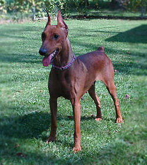
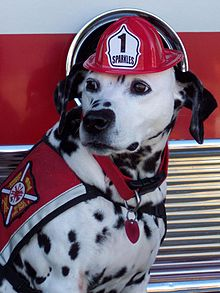
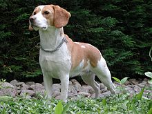

Una raza de perro o raza canina es un grupo de perros que tienen características muy similares o casi idénticas en su aspecto o comportamiento o generalmente en ambos, sobre todo porque vienen de un sistema selecto de antepasados que tenían las mismas características. Los perros han sido apareados selectivamente para conseguir características específicas por miles de años.
Hay aproximadamente 800 razas —más que de cualquier otro animal— que varían significativamente en tamaño, fisonomía y temperamento. Las razas de perros en sentido moderno comenzaron a partir de la precisa documentación de los pedigríes que se establecen en el Kennel Club Inglés en , a imitación de otros registros genealógicos para ganado y caballos.

El Pinscher es un perro de talla grande, de 60 y 69 cm., de porte orgulloso y de fuerte musculatura, con peso de 32 a 40 kg. Tiene una cabeza delgada y de hocico alargado, orejas medianas, ligeramente dobladas en el nacimiento, que cuelgan de la cabeza del perro y que generalmente son cortadas. Cuello de longitud media, ancho y fuerte, tronco de líneas estilizadas y elegantes. Respecto a la cola, al igual que las orejas, también suele ser amputada. El pelaje, que es corto y áspero, se presenta en tonos marrón, pardo o negro, y fuego en el vientre y el pecho. .
DálmataEl dálmata es una raza canina que debe su nombre a la histórica región de Dalmacia. Su característica principal es su singular pelaje moteado de color negro, hígado o limón. Al nacer, las crías carecen de manchas, las cuales van apareciendo por todo su cuerpo durante el primer año de vida. La hiperuricemia es común entre los dálmatas, por lo cual suelen ser considerados los únicos mamíferos uricotélicos. Otro rasgo de origen genético propio de la raza es su alta predisposición a la sordera. Las primeras descripciones documentadas del dálmata (en croata, pas Dalmatinski, Dalmatiner) se remontan a principios del
Los beagle son una raza de perro de tamaño pequeño a mediano. Tienen un aspecto similar al foxhound, pero de menor tamaño, con patas más cortas y orejas más largas y suaves. Este perro, clasificado en el grupo 6, sección 1.3 por la Federación Cinológica Internacional, es un sabueso utilizado principalmente para rastrear liebres, conejos y otras piezas de caza. Su gran capacidad olfativa e instinto de rastreo hace que se utilicen como perros de detección de importaciones agrícolas prohibidas y productos alimenticios en cuarentena a lo largo de todo el mundo.

Los beagles llegaron a Estados Unidos en torno a los años , pero los primeros perros fueron importados exclusivamente para la caza y eran de calidad variable. Ya que Honeywood sólo había comenzado su cría en los años 1830, es improbable que estos perros fueran representativos de la raza moderna y su descripción como similares a los dachshund con la pierna recta y con cabeza delgada indica su poco parecido al estándar.